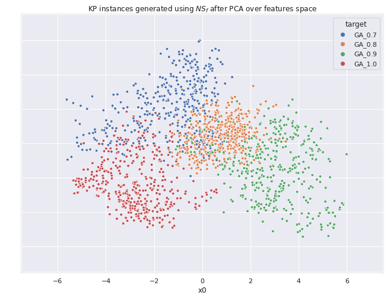

Getting Started
How DIGNEApy works.
DIGNEA (Diverse Instance Generator with Novelty Search and Evolutionary Algorithms) is a framework which allow researchers to generate diverse and discriminatory instances for any combinatorial optimization problem. The method uses a portfolio of solvers to evaluate its performance over a population of instances for a particular optimization problem. Moreover, it also uses a Novelty Search algorithm to search for instances that are diverse but also elicit discriminatory performance from a set of target solvers. A single run of DIGNEApy per target solver provides discriminatory instances and broad coverage of the feature-space.
How to
Main components.
The main building blocks of DIGNEApy are the following classes and protocols:
- SupportsSolve: Any callable type that receives a Problem (P) and returns a list of Solution.
- Problem: The Problem class defines a classical optimization to be solved (KP, TSP, Sphere, etc). The
__call__method must be defined. The method must received a sequence or Solution type and return a tuple with the evaluation of the solution. - Domain: Abstract class that represents a domain (optimisation domain) for which you want to generate instances. New domains must subclass this class.
- Generator: Any callable that when invoked returns a GenResult object.
- GenResult: A dataclass which contains the following attributes:
- target: String with the name of the target solver of the instances
- instances: A sequence of instances generated
- history: An object of class Logbook with the history of the different metrics computed during the evolution
-
metrics: A pd.Series with the metrics of the resulting instances
-
EAGenerator: Meta-Evolutionary Algorithm. This class represents the instance generator algorithm. It receives a portfolio of solvers (one defined as the target algorithm) and it returns a set of diverse instances where the target solver outperforms the remaining algorithms in the portfolio; i.e., the instances are biased to the performance of such target.
Results
An example of the results obtained by DIGNEApy is shown down below. Four different sets of KP instances were generated for different configurations of Genetic Algorithms using EAGenerator. 
More information
To get more information on how the method works check the following papers:
-
Marrero, A., Segredo, E., León, C., Hart, E. (2022). A Novelty-Search Approach to Filling an Instance-Space with Diverse and Discriminatory Instances for the Knapsack Problem. In: Rudolph, G., Kononova, A.V., Aguirre, H., Kerschke, P., Ochoa, G., Tušar, T. (eds) Parallel Problem Solving from Nature – PPSN XVII. PPSN 2022. Lecture Notes in Computer Science, vol 13398. Springer, Cham. https://doi.org/10.1007/978-3-031-14714-2_16
-
Alejandro Marrero, Eduardo Segredo, Coromoto León, Emma Hart; Synthesising Diverse and Discriminatory Sets of Instances using Novelty Search in Combinatorial Domains. Evolutionary Computation 2024; doi: https://doi.org/10.1162/evco_a_00350